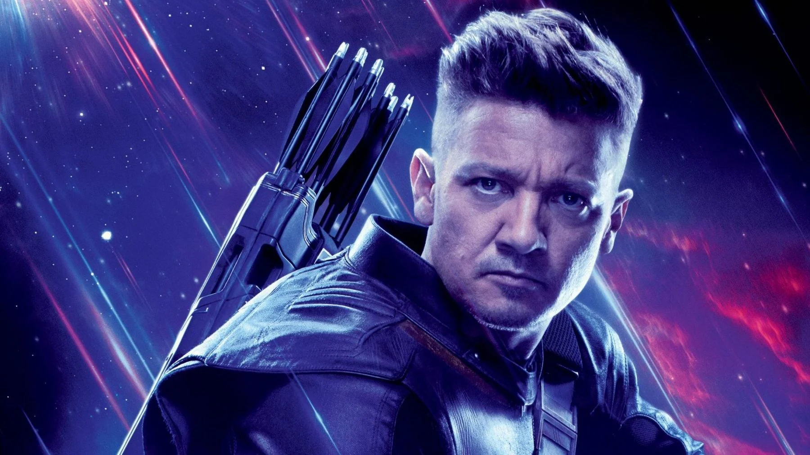
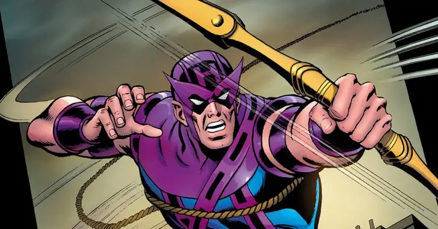
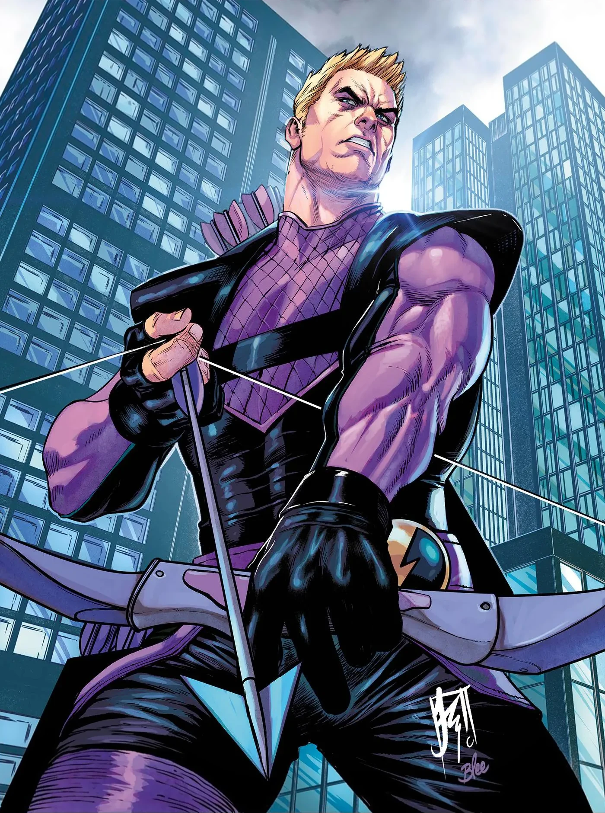

HAWKEYE
 March 14, 2024Gavião Arqueiro – Origem, características e poderes 🏹
Gavião Arqueiro (nome original em inglês, Hawkeye) alter-ego de Clint Barton, é um personagem de quadrinhos americanos da Marvel Comics. Criado por Stan Lee e Don Heck, o herói fez sua primeira aparição em Tales of Suspense #57 (Setembro de 1964), onde era um vilão ajudando até então vilã, Viúva Negra.
O personagem encontrou redenção ao se juntar aos Vingadores em Avengers #16 (Maio de 1965), fazendo parte do "Cap's Kooky Quartet" junto com Capitão América, e os gêmeos Maximoff. Desde então, Barton tem sido membro proeminente da equipe.
Origem do Gavião Arqueiro ➵
Clinton Barton nasceu em Waverly, Iowa. Ele não terminou o ensino médio por motivos desconhecidos. Barton veio a desenvolver um talento único para pontaria, sobretudo com um arco e flecha, sendo reconhecido como o "maior atirador vivo do planeta". Mais tarde em sua vida, Barton conheceu e formou um relacionamento romântico com uma mulher chamada Laura, com quem ele acabaria se casando e tendo três filhos.
Poderes e habilidades de Gavião Arqueiro 🏹🟪

Gavião Arqueiro, também conhecido como Clint Barton, é um dos heróis mais habilidosos e versáteis do universo Marvel.
Com sua destreza excepcional no arco e flecha, ele demonstra precisão cirúrgica e uma mira impecável em todas as situações de combate.
Além de sua proficiência com o arco, o Gavião Arqueiro é um mestre em combate corpo a corpo.
Ele é atlético e ágil, capaz de realizar acrobacias incríveis e se adaptar a qualquer ambiente de batalha.
Uma das características mais distintivas do Gavião Arqueiro é sua astúcia e inteligência tática.
Ele é um estrategista experiente, capaz de elaborar planos complexos e improvisar rapidamente em situações de crise.
Além disso, Barton é conhecido por sua personalidade sarcástica e seu senso de humor afiado.
Isso o torna um personagem cativante e muitas vezes alivia a tensão em momentos de perigo.
O Gavião Arqueiro também possui uma forte ética moral e um senso de dever para com seus companheiros e o mundo em geral.
Ele está sempre disposto a arriscar sua vida para proteger os inocentes e lutar pela justiça.
Apesar de não possuir superpoderes sobre-humanos, o Gavião Arqueiro compensa isso com sua determinação implacável e sua habilidade incomparável no campo de batalha.
Sua contribuição para os Vingadores e para o universo Marvel como um todo é inegável, tornando-o um dos heróis mais respeitados e admirados de todos os tempos.